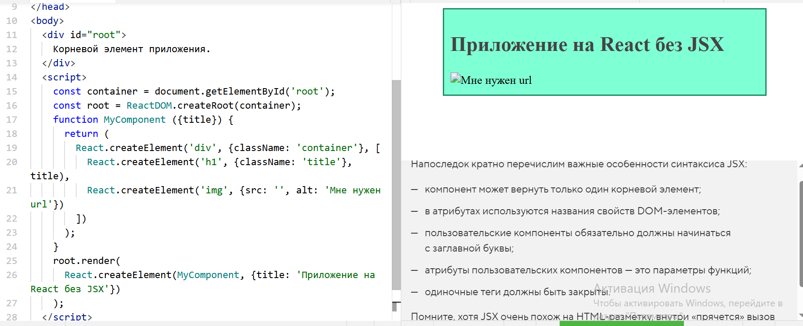

React. Основы синтаксиса
Напоследок кратно перечислим важные особенности синтаксиса JSX:
- компонент может вернуть только один корневой элемент;
- в атрибутах используются названия свойств DOM-элементов;
- пользовательские компоненты обязательно должны начинаться с заглавной буквы;
- атрибуты пользовательских компонентов — это параметры функций;
- одиночные теги должны быть закрыты.
Помните, хотя JSX очень похож на HTML-разметку, внутри «прячется» вызов JS-функций.

Корневой элемент приложения. Всем, что внутри него, будет управлять библиотека React.